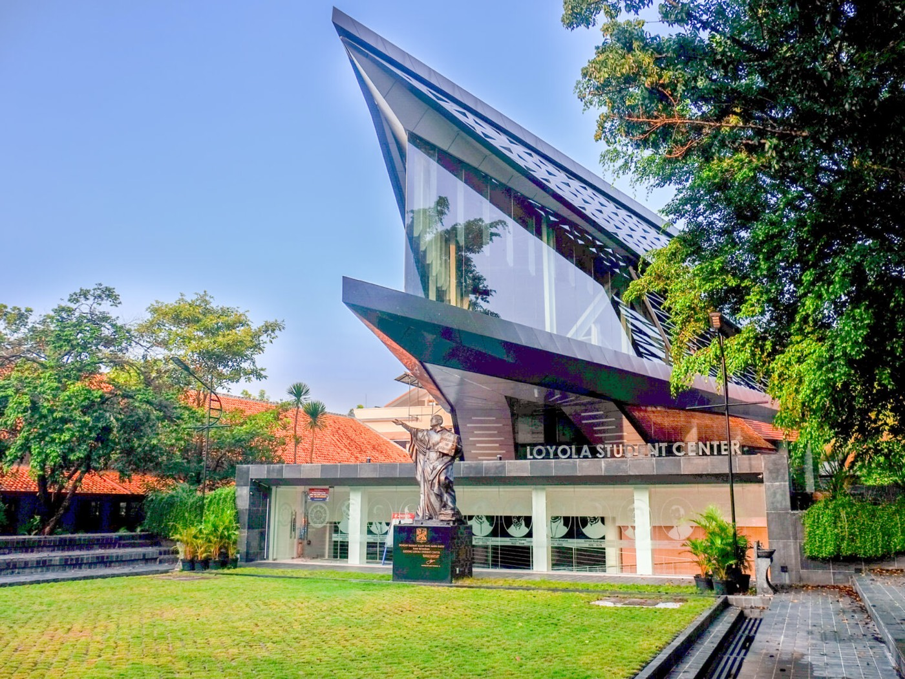
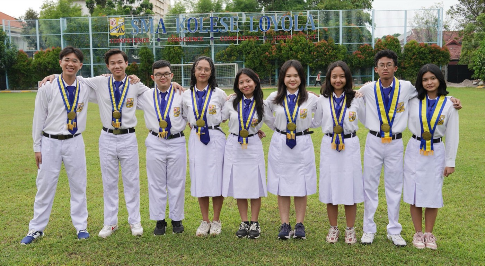
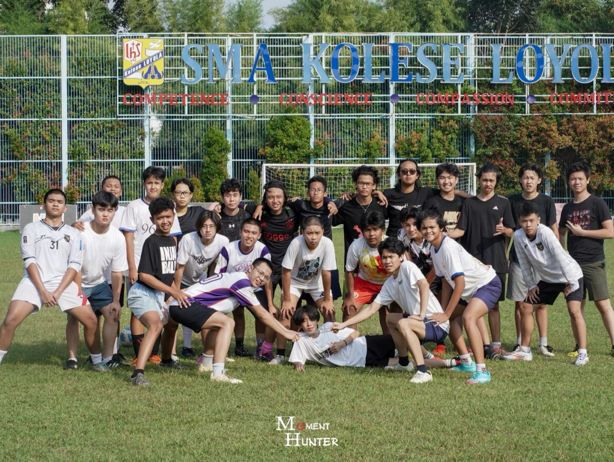
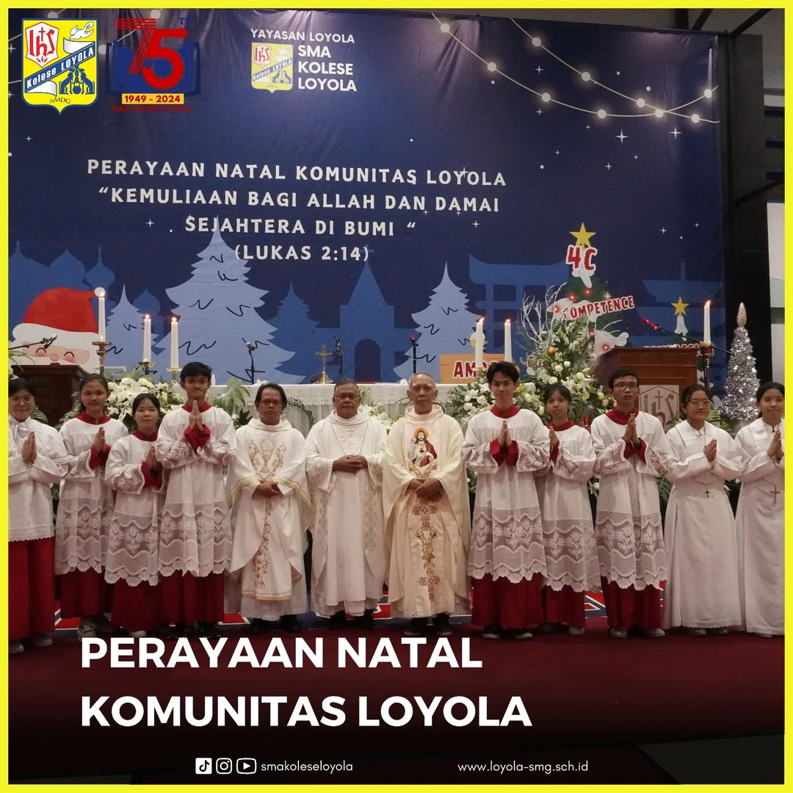
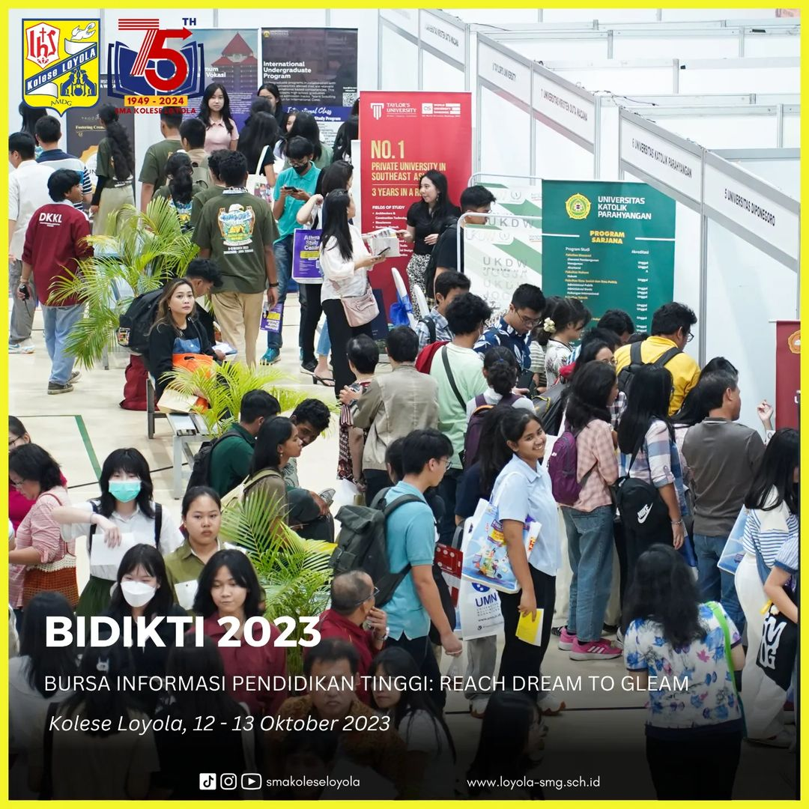

Competence
Cakap
Cakap dan unggul dalam ilmu serta keterampilan, selalu berusaha menjadi lebih baik.
Sekolah Katolik Jesuit sejak 1949
Belajar. Peduli. Bertumbuh.
Sekolah Katolik bercorak Jesuit di Jalan Karanganyar, Semarang. Sejak 1949, Loyola mendidik kaum muda menjadi pribadi yang cerdas, berhati nurani, dan peduli pada sesama.

Nilai pendidikan Jesuit
Nilai 4C menjadi arah pendidikan di Kolese Loyola: cakap, berhati nurani, berbela rasa, dan setia pada kebaikan.
Cakap
Cakap dan unggul dalam ilmu serta keterampilan, selalu berusaha menjadi lebih baik.
Berhati nurani
Punya hati nurani yang jernih untuk memilih yang benar dan baik.
Berbela rasa
Peka dan berbela rasa pada sesama, terutama yang lemah dan tersisih.
Setia berjuang
Setia dan bertanggung jawab memperjuangkan kebaikan dan keadilan.

Sejarah singkat
Pada Agustus 1949, Pater Jan van Waayenburg, SJ mendirikan SMA Canisius VHO di Bruderan Kalisari, Semarang. Setahun kemudian sekolah ini berganti nama menjadi Kolese Loyola dan pindah ke Jalan Karanganyar, tempatnya berdiri sampai sekarang.
Nama Loyola diambil dari santo pelindung sekolah, Santo Ignatius Loyola, pendiri Serikat Yesus (Jesuit). Sejak 1968 Loyola menerima siswi, dan pada 2024 merayakan ulang tahun ke-75.
Jelajahi
Arahkan kursor ke tiap panel untuk melihat lebih dekat, lalu klik untuk membuka halamannya.

Dari medali perak OSN Informatika sampai tim basket putri di babak Fantastic Four Honda DBL.

Kapel, laboratorium, ruang cinema, aula, sampai gedung Loyola Student Center.

Class meeting, Natal bersama, BIDIKTI, sampai konser Gamelan Soepra.

Sejarah sejak 1949, Santo Ignatius Loyola, dan makna logo sekolah.
Momen di Loyola





Men and women for others
Belajar bukan hanya untuk diri sendiri, tetapi juga untuk sesama. Kenali Loyola lebih dekat atau hubungi sekolah langsung.